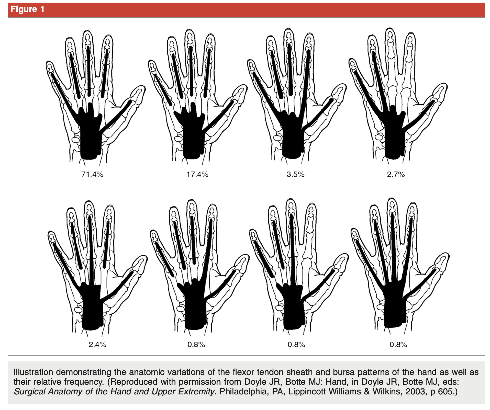
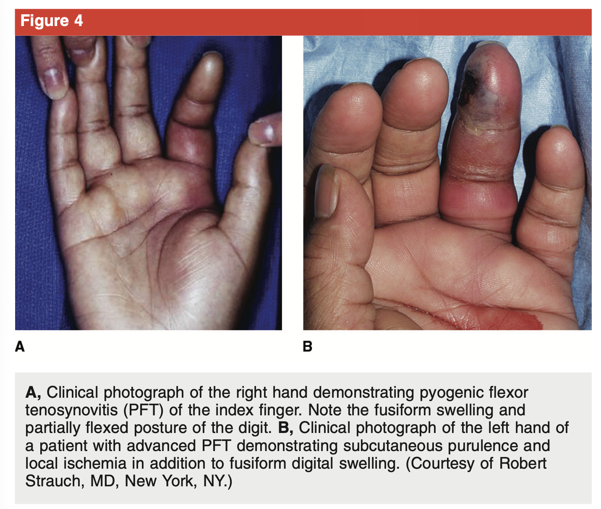
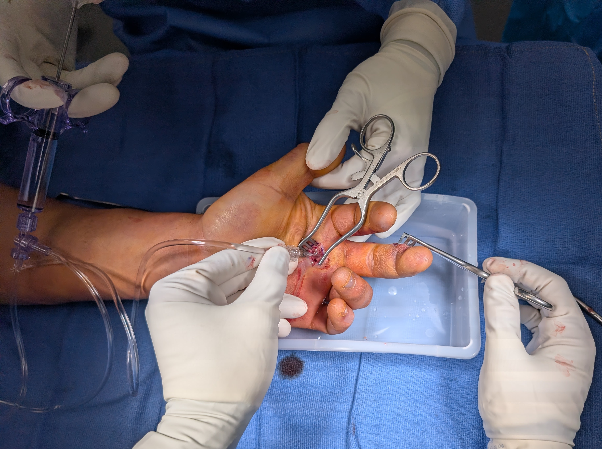

Most infections superficial (skin/SC); most common site:
dorsal subcutaneous tissues
Frequency: paronychia (35%), cellulitis (35%), felons (15%), flexor
sheath (10%), deep space (2%), septic arthritis (2%), osteomyelitis
(1%)
Most common organisms: S. aureus + beta-hemolytic
strep; MRSA: 34-73% of hand infections
Small finger + thumb flexor sheaths extend to ulnar/radial bursae in
32-80%

Anatomic variations of the digital flexor
sheaths and radial/ulnar bursae, with relative frequency. The classic
pattern (top left) is present in only ~71% of hands — variant
communications explain horseshoe and isolated-bursa abscess
patterns.
Treatment Principles
Elevation; cultures (aerobic + anaerobic for acute; add AFB/fungal
for chronic)
Empiric abx → narrow based on cultures
Tourniquet: gravity exsanguination only — never exsanguinate
the limb (no Esmarch); don’t milk infection proximally
Incisions: longitudinal over nidus (except palmar digit/palm/wrist →
Brunner-type for contracture prevention)
Take cultures from periphery (higher bacterial
concentration) — not central necrotic nidus
Low threshold for tissue biopsy if dx in doubt — neoplasms can mimic
infection
Immobilize in intrinsic-plus: wrist 30° extension,
thumb palmar abducted, MCPs 70-90° flexion, IPs extended
Barrera: Initial admission orders for a hand
infection — bedside I&D if drainable, Carter block elevation, IV
vanc + Unasyn, standing IV Toradol, TID warm soapy soaks if bedside
I&D performed, NPO at midnight for next-day OR debridement.
Specific Infections
Cellulitis
Strep + S. aureus; spreading erythema, edema, tenderness
Empiric must include MRSA in most communities:
TMP-SMX DS 2 tabs BID
Improvement within 24h; duration 5 days PO
Adding rifampin covers >90% community MRSA
Paronychia
Acute (<6 wk): S. aureus most common; warm soaks
+ PO abx if early; abscess → elevate nail fold or incise; point
blade away from germinal matrix; complete nail removal if
entire plate undermined
Felon drainage — longitudinal incision
over the point of maximal fluctuance, then blunt disruption of the
fibrous septae to decompress all loculations.
Herpetic Whitlow
HSV-1 (children) or HSV-1/2 (adults); clear vesicles on erythematous
base
Pulp does NOT become tense unless secondary
bacterial infection
Self-limited in 3 weeks; NEVER incise — risk of
secondary bacterial infection, amputation, HSV meningoencephalitis
Herpetic whitlow — coalescent
fluid-filled vesicles on an erythematous base. The pulp stays soft (not
tense), helping distinguish it from a felon.
Pyogenic Flexor
Tenosynovitis
Surgical emergency — high amputation rate
(17%)
Kanavel’s 4 signs: uniform (“fusiform”) swelling,
flexed position, pain on passive extension, tenderness along sheath;
all 4 present in only 54%
“Fusiform” is a misnomer — the finger is not
spindle-shaped; both PFT and non-PFT infections cause diffuse swelling
(Yi/Kennedy 2019)

- Lateral radiograph at the proximal phalanx (P1):
volar minus dorsal soft tissue thickness ≥ 7 mm = 82%
PPV for PFT (sens 84%, spec 74%); ≥ 10 mm = 93%
PPV (Yi/Kennedy 2019). Useful when Kanavel’s signs are
equivocal. - CRP sensitivity 76% (most useful lab); WBC sensitivity only
39% - Empiric: vancomycin + piperacillin-tazobactam
(MRSA + gram-negatives) - <24-48h from onset: trial parenteral abx
alone may work; no response in 12-24h → surgery - Closed sheath
irrigation (angiocath at A1 → out distally) or open drainage;
no difference in early outcomes - Full active ROM immediately
postop - Poor outcome: age >43, DM, PVD, renal failure,
polymicrobial
Barrera: For closed sheath irrigation, use the
single-action manual pump from the urology set + a
16-gauge angiocath in the sheath proximally, connected
to a hanging bag of saline. Pump until effluent runs clear through the
distal counter-incision.

Closed flexor sheath irrigation setup for
PFT. The single-action manual pump (urology set) is spiked to a 3 L bag
of saline; the distal tubing connects to a 16-gauge angiocath. A
transverse/oblique incision at the A1 pulley accesses the sheath
proximally, and a midaxial counter-incision at the DIP joint opens the
sheath distally for fluid egress. A third midaxial counter-incision at
the PIP/P1 level can be added if a subcutaneous abscess there requires
drainage.
Septic Arthritis
Small joints: traumatic inoculation > bacteremia; wrist:
bacteremia more likely
Empiric: ampicillin-sulbactam + clindamycin +
ciprofloxacin; urgent debridement of all necrotic tissue
Mortality: 23-76%; DM most common comorbidity;
delay >24h → higher mortality
Human Bites / Fight Bites
Eikenella corrodens characteristic but Group A
Strep + S. aureus more common
Infection rate 10-20%; always to OR; explore MCP
joint for fight bites
Empiric: ampicillin-sulbactam; PO = amox/clav
Late presentation (≥8 days): 22% osteomyelitis, 18% amputation
Animal Bites
Cat bites: 30-50% infection rate (vs 15% dog);
Pasteurella multocida most common isolate
Empiric: amox/clav PO or amp/sulbactam IV
Cat bites: NEVER close primarily. Extend the
puncture, formal I&D, debride, and pack open.
Closing a cat bite traps inoculated Pasteurella in a deep narrow
puncture that re-seals over the inoculum.
Dog bites: loose primary closure acceptable after
adequate debridement
Barrera: Cat bites — never close. Extend and pack
open. Dog bites — loose closure after debridement is fine. The cat bite
is a needle-thin puncture that inoculates deep and re-seals over
Pasteurella; closing it manufactures a fulminant infection.
Pearls / Pitfalls
MRSA is 34-73% of hand infections — empiric coverage is
mandatory
Herpetic whitlow: NEVER incise — self-limited; incision risks
devastating complications
Kanavel’s signs are only 54% sensitive — low threshold for surgical
exploration
“Fusiform” swelling is a misnomer — lateral XR volar−dorsal soft
tissue at P1 ≥ 7 mm shifts probability sharply toward PFT
CRP is the most useful lab for flexor tenosynovitis (76%
sensitivity)
Fight bites: always explore the MCP joint — even if wound appears
superficial
Cat bites infect twice as often as dog bites — and must NEVER be
closed primarily
Crystals do NOT exclude septic arthritis — always culture
Empiric abx for hand septic arthritis is vanc + Unasyn (or Zosyn),
not vanc + TMP-SMX (double MRSA coverage)
LRINEC >6 for necrotizing fasciitis: this score can be
life-saving
Board-Style Questions (5)
Q: What are Kanavel’s 4 signs of pyogenic flexor
tenosynovitis? — A: Fusiform swelling, flexed posture,
pain on passive extension, tenderness along flexor tendon
sheath.
Q: A patient presents with a tense, throbbing
fingertip with erythema after a puncture wound. Swelling does NOT extend
proximal to the DIP crease. What is the diagnosis and preferred surgical
approach? — A: Felon; longitudinal incision over pulp
at maximal fluctuance (or distal lateral mid-axial on non-border side),
bluntly disrupting septae.
Q: What organism in leech saliva requires
prophylactic antibiotics during leech therapy, and what is the
characteristic organism in human bite infections? — A:
Aeromonas hydrophila (leeches); Eikenella corrodens (human bites, though
S. aureus and Group A Strep are more common).
Q: What is the LRINEC score threshold that has a
92% PPV for necrotizing fasciitis? — A: Score >6
(components: CRP, WBC, hemoglobin, sodium, creatinine,
glucose).
Q: A patient with chronic paronychia for 3
months has thickened, ridged nails and tender red nail folds. What is
the most likely organism? — A: Candida albicans
(present in 40-95% of chronic paronychia cases).
References
Osterman M, et al. Hand infections. In: ASSH Handthology.
Pang HN, et al. Factors affecting outcome after treatment of flexor
tendon sheath infections. J Bone Joint Surg Am 2007.
Wong CH, et al. The LRINEC score: a tool for distinguishing
necrotizing fasciitis. Crit Care Med 2004.
Tosti R, et al. Fight bite infections of the hand. J Hand Surg
Am 2019.
Yi A, Kennedy C, Chia B, Kennedy SA. Radiographic soft tissue
thickness differentiating pyogenic flexor tenosynovitis from other
finger infections. J Hand Surg Am 2019;44(5):394-399.